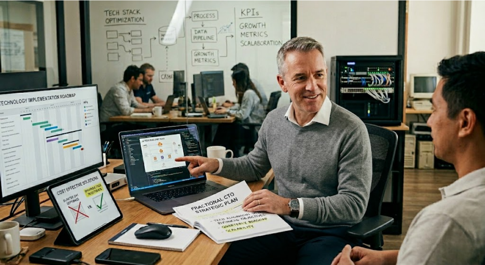
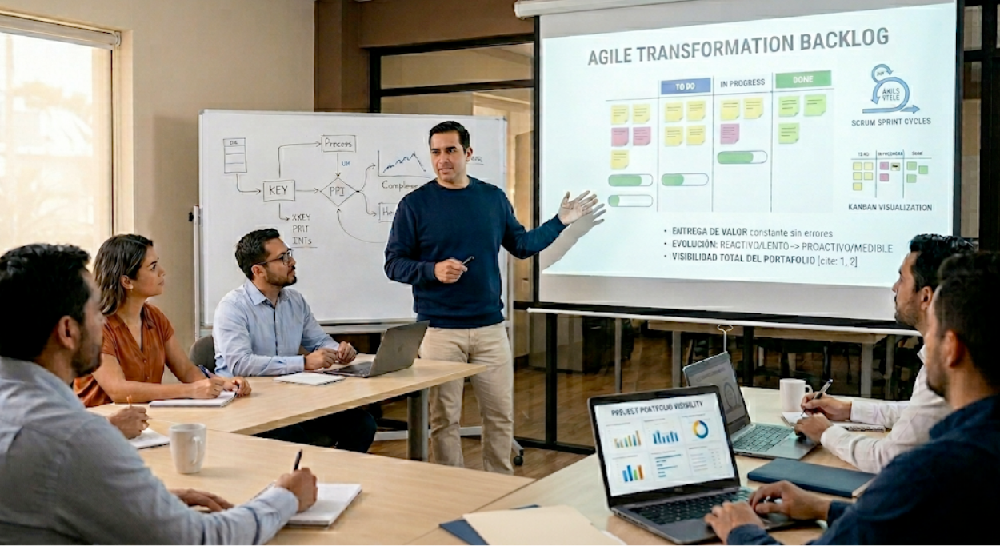

Consultoría ejecutiva de tecnología Diagnóstico, dirección estratégica y resultados medibles
¿Cómo trabaja AzTech Business?
Dialogamos para entender tu flujo de trabajo real. Trazamos un diagnóstico técnico con una propuesta inicial. Brindándote claridad y soluciones desde el primer contacto, optimizando cada minuto de tu tiempo.
Pulimos la propuesta juntos para alinear prioridades. Dejamos la ruta trazada: cronograma, alcance e inversión clara.
Nuestro equipo despliega las soluciones planificadas bajo estándares de la industria, sin afectar tu jornada diaria.
Aseguramos que tu tecnología sea un motor de crecimiento con seguimiento proactivo y excelencia técnica.
Nuestros Servicios
Engagements cortos y de alto impacto. Diagnóstico y dirección estratégica
con resultados medibles — no proyectos de meses.
Diagnóstico IT
Ejecutivo
Evaluación integral

Evaluación integral de madurez tecnológica: infraestructura, procesos, equipo humano y costos. Recibes un reporte accionable con hoja de ruta priorizada, no un documento genérico de 80 páginas.
- Sesión de descubrimiento con gerencia (2-3h)
- Relevamiento técnico del estado actual
- Reporte ejecutivo (máx. 15 páginas) con hallazgos priorizados
- Hoja de ruta a 90 días con quick wins identificados
AI Readiness
Assessment
Preparación real para IA
¿Dónde tiene sentido la IA en tu empresa, con qué empezar y qué necesitas antes de gastar un centavo? No implementamos IA — te decimos si estás listo y por dónde arrancar.
- Diagnóstico de madurez IA en 4 dimensiones
- Mapa de oportunidades: retorno real vs. gasto sin impacto
- Quick wins implementables en 30 días
- Hoja de ruta IA ejecutable a 90 días con estimación de inversión
Advisory
Estratégico
Decisiones críticas de tecnología

Sesiones de asesoría para decisiones tecnológicas críticas. No es un retainer mensual: es un bloque de 3-5 sesiones estructuradas para resolver una pregunta estratégica concreta.
- Sesión de encuadre: definir la pregunta y el contexto
- 2-4 sesiones de trabajo (60-90 min) con análisis preparado
- Documento de recomendación con opciones, riesgos y siguiente paso
¿Necesitas ir más allá del diagnóstico?
Cuando el diagnóstico o el advisory lo justifican, podemos acompañarte en la implementación como fase siguiente:
Inteligencia Artificial que genera resultados medibles
No implementamos IA por moda. La implementamos donde genera retorno real.
AIOps
Monitoreo proactivo que aprende de tus operaciones. Detecta y resuelve incidentes antes de que impacten al negocio. Reduce MTTR y libera a tu equipo de apagar incendios.
IA para Decisiones
Dashboards ejecutivos generados con lenguaje natural. Tu equipo accede a datos complejos con preguntas simples. Decisiones más rápidas con información confiable y en tiempo real.
Automatización Inteligente
Agentes IA que ejecutan tareas repetitivas: reportes, auditorías de logs, alertas, documentación. Tu equipo enfocado en lo que genera valor, no en lo que consume tiempo.